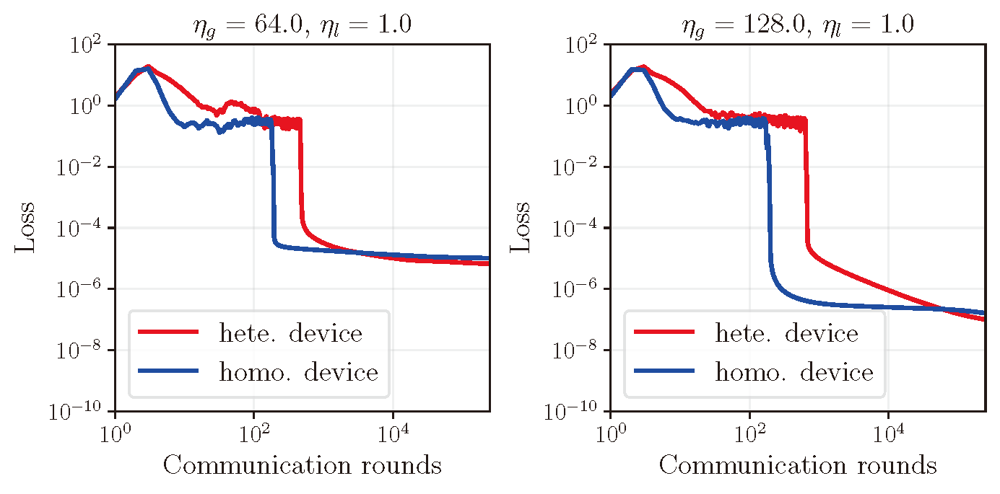
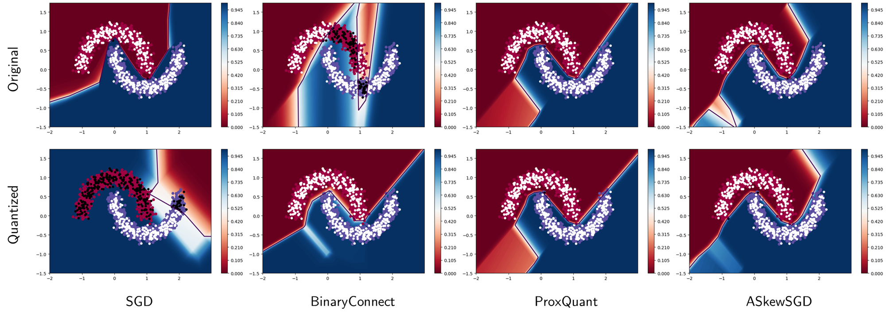
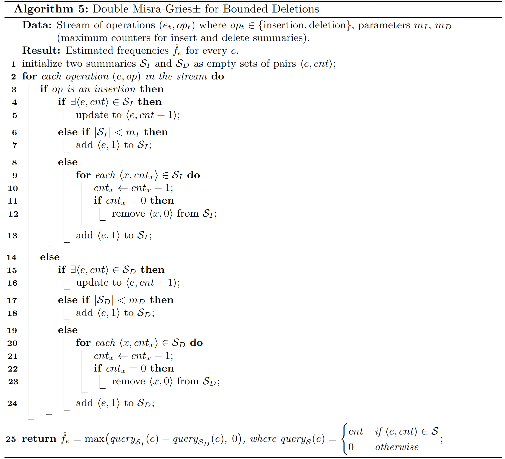
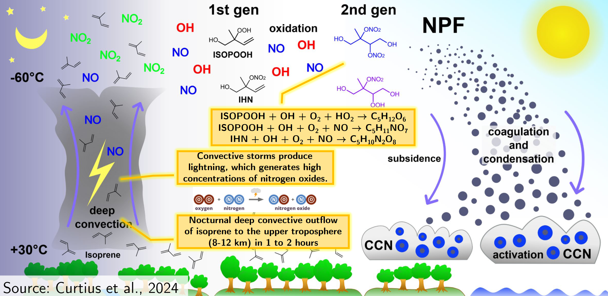
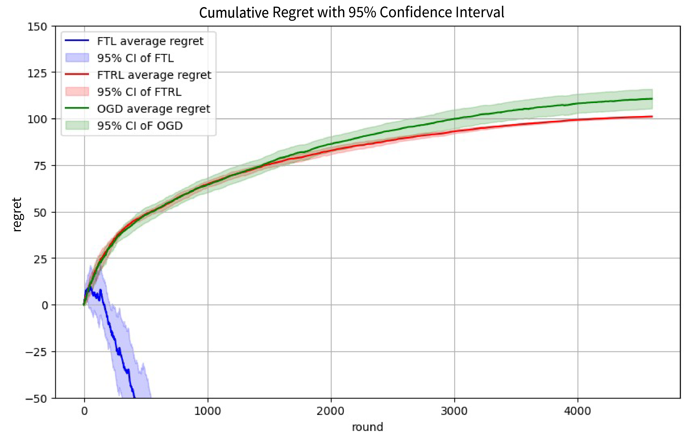
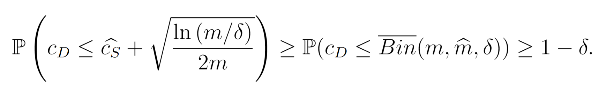
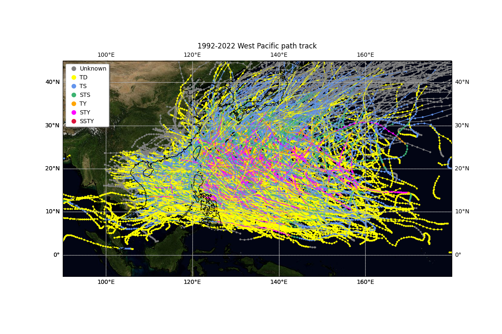
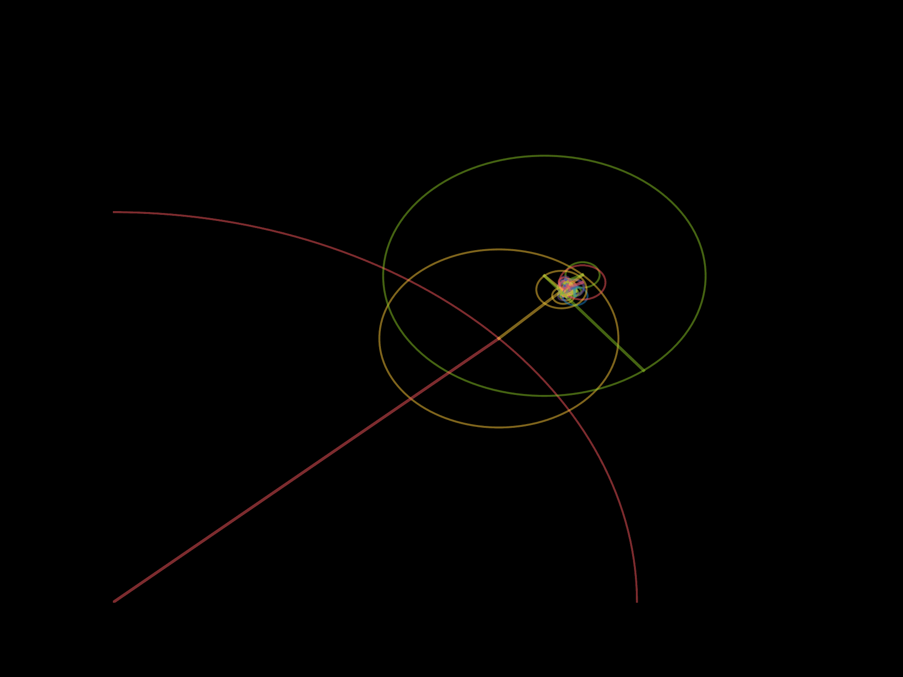

Academic Projects
Research Vision
My current research seeks to build a theoretical and practical foundation for demystifying the empirical success of modern machine learning by rigorously analyzing optimization dynamics. I am driven by the motivation that a deeper mathematical understanding of optimization and learning algorithms is the key to unlocking the next-generation of deep learning.
My work is anchored at the investigation of how models learn¡Xparticularly through gradient-based methods¡Xand how we can engineer these mechanisms to be faster, more robust, and deployable in resource-constrained environments. This vision is built on three interconnected pillars:
1. Theoretical Underpinnings of Optimization: I aim to step toward a more general theory of why the modern and non-conventional optimization often succeed in practice. This is exemplified by my work on large stepsize gradient descent for multinomial logistic regression. I plan to extend this inquiry to deeper architectures and more complex loss landscapes, seeking principles that can guide hyperparameter selection and algorithm design from first principles.
2. Efficiency and Deployment through Quantization: Moving from theory to practice, I focus on making powerful models lean and executable. My research on quantization optimizers (such as ASkewSGD) tackles the critical challenge of compressing neural networks without sacrificing performance. The goal is to develop algorithms that co-design the training and quantization processes, ensuring models are equipped with hardware-friendly representations.
3. Foundations of Generalization and Online Learning: I am fascinated by what enables models to generalize from data and adapt to streaming information. My early exploration of test set bounds in binary classification and the sublinear regret bound in online logistic regression represent a quest to formalize learning guarantees.
Publication
|
 |
Large Stepsizes Federated Learning on Logistic Regression with Linearly Separable Data: The Case of Heterogeneous Devices To appear in the 65th IEEE Conference on Decision and Control, 2026, Honolulu, Hawaii, USA |
Projects
Research Projects
 |
Undergraduate Final-Year Thesis Project (Fall 2025, Spring 2026) Slides (Part I) / Slides (Part II) / Thesis A Theory of Large Stepsize Gradient Descent on Multinomial Logistic Regression |
|
 |
Undergraduate Summer Research Internship (2024, 2025) Enforcing Quantization Optimizers on MLPs Trained on the Two-Moons Dataset: ASkewSGD's Consistently Clear Boundaries Best Project Award of UG Summer Research Internship (2025). |
Course Projects
|
 |
SEEM5020 (Spring 2026) Final Project Frequency Estimation of Strict-Turnstile Data Stream with L1 $\alpha$-Bounded Deletion Property |
|
 |
EESC3220 (Spring 2026) Final Project New Particle Formation of Isoprene under Upper-Tropospheric Conditions |
 |
EESC4550 (Spring 2026) Final Project Severe Dust Storm During April 2025 in China - Vertical Evolution of the Yellow Dragon Based on GEOS-Chem Simulations |
|
 |
ESTR3114 (Fall 2024) Final Project Online Logistic Regression on Spam Email Classification: Sublinear Regret |
|
 |
ESTR2004 (Fall 2023) Final Project Test Set Bound for Binary Classification |
|
 |
ENGG1003 (Fall 2022) Final Project Automated Typhoon Track Data Scraping and Visualization |
| Course Code | Course Title | Topic | Links |
| ENGG1003 (Fall 2022) | Digital Literacy and Computational Thinking | Web Crawler and Automated Meteorological Data Analysis for Tropical Cyclones | GitHub |
| ENGG1110 (Fall 2022) | Problem Solving by Programming (C Computing) | Implementing Numerical Tic-Tac-Toe Agents by Alpha-Beta Pruning / Heuristics | GitHub |
| ESTR2004 (Fall 2023) | Discrete Mathematics for Engineers (ELITE Stream) | Test Set Bound for Binary Classification Learning | GitHub |
| ESTR2018 (Fall 2023) | Probability for Engineers (ELITE Stream) | Extractive Text Summarization Using the TF-IDF Approach | GitHub |
| ESTR3108 (Fall 2024) | Fundamentals of Artificial Intelligence (ELITE Stream) | AI in Games: AlphaGo Zero (Reading Report) | |
| ESTR3114 (Fall 2024) | Numerical Optimization (ELITE Stream) | First-Order Methods in Online Convex Optimization | Code |
| BMEG3102 (Spring 2025) | Bioinformatics | LSTM-LM+GNN Structure-Based Protein Function Prediction (Reading Report) | PPT Report |
| SEEM5020 (Spring 2026) | Algorithms for Big Data | Frequency Estimation of Strict-Turnstile Data Stream with L1 $\alpha$-Bounded Deletion Property | |
| EESC4550/5550 (Spring 2026) | Practical Atmospheric Modeling | Vertical Evolution of the Yellow Dragon: Quantifying the AOD-to-Surface PM Discrepancy during the April 2025 Dust Event | |
| EESC3220 (Spring 2026) | Atmospheric Chemistry | New Particle Formation of Isoprene under Upper-Tropospheric Conditions (Reading Project) | |
| UGSRI | Undergraduate Summer Research Internship (2024, 2025) | Quantization of Deep Neural Networks | Code Poster Paper |
Personal Projects
|
 |
Contour Approximation by Fourier Transform [Github] |
| Topic | Brief Introduction | Links |
| Personal Blog (Summer 2023) | Implementation of a dynamic blog in Django and JavaScript, with Markdown and admin panel support | GitHub |
| Contour Approximation by Fourier Transform (Winter 2021) | Downsample the contour points using the Ramer-Douglas-Peucker algorithm, generate an MST by Delaunay Triangulation to minimize the Eulerian path length for efficiency, and approximate a 2D contour by Fourier Transform. | GitHub |
Essays
| Course Code | Course Title | Essay Topic | Links |
| ELTU1002 (Spring 2023) | English Communication for University Studies | Typhoon Hato (2017) and Macao | |
| GEMC3001 (Fall 2024) | Service Learning / Civic Engagement | Service Learning Journal / Research and Observation Syntheses | Journal Essay |
| ELTU3415 (Fall 2024) | English through Food | Interlacing Food Memories with the Intensive Academic Life at CUHK |
Olympiad in Informatics
My Original ICPC-type Problems
 |
Slim prime mazes with few columns are trivial! |
| Problem Title | Tags | Links |
| Prime Maze | Observation, Math, Heuristics | PDF Editorial |
| Matchmaker | Basic Number Theory, Data Structures |
Selected Training Materials
| Title | Links |
| Observing Decomposable Patterns in OI (A Case of the Problem “Find the Base”) |
Course Notes
| Course Code | Course Title | Links |
| BMEG3102 (Spring 2025) | Bioinformatics | |
| EESC2010 (Spring 2024) | Solid Earth Dynamics | |
| EESC2020 (Fall 2023) | Climate System Dynamics | |
| EESC3220 (Spring 2026) | Atmospheric Chemistry | PDF-1 PDF-2 PDF-3 |
| EESC3600 (Spring 2026) | Ecosystems and Climate | |
| EESC4270 (Spring 2026) | Cloud Dynamics | |
| ESTR3108 (Fall 2024) | Fundamentals of Artificial Intelligence | |
| CSCI3150 (Fall 2024) | Introduction to Operating Systems | |
| CSCI3320 (Spring 2025) | Fundamentals of Machine Learning | |
| CSCI5010 (Spring 2024) | Practical Computational Geometry Algorithms | PDF1 PDF2 |
| MATH4230 (Spring 2025) | Optimization Theory | |
| SEEM5020 (Spring 2026) | Algorithms for Big Data | Annotated Notes |
Solution to Problem Sets
My solutions to the ungraded problem sets for algorithm-design-related courses. The solution will available to the public only when the course is NOT offered in the current academic term.
| Course Code | Course Title | Links |
| CSCI3160 (Fall 2024) | Design and Analysis of Algorithms | GitHub |
| CSCI5010 (Spring 2024) | Practical Computational Geometry Algorithms | GitHub |